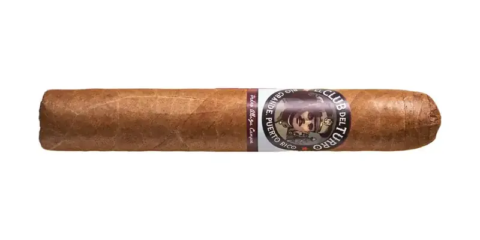

Pedro Albizu Campos
De El Club del Turro · Río Grande, Puerto Rico
Capote Corojo y tripa Criollo de Finca Neo Jibairo. Tributo a Don Pedro; humo cremoso.
- Capa: Connecticut
- Fortaleza: Suave
- Vitolas: Robusto, Toro
Fuentes: 1
Ver Pedro Albizu Campos en la app, califícalo y guárdalo en Mi Hoja.